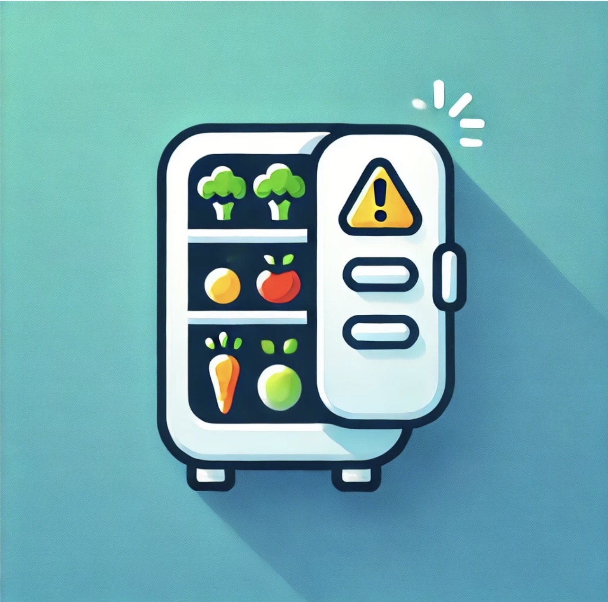

FridgeUp! — Support

FridgeUp!
EN
IT
DE
FR
ES
PT
{{ t.back }}
{{ t.title }}
{{ t.intro }}
{{ q.q }}
{{ q.a }}
{{ t.contactTitle }}
{{ t.contactBody }}
iOS — fridgeup.ios@gmail.com
Android — fridgeup.android@gmail.com
{{ t.privacy }}
App Store
Google Play